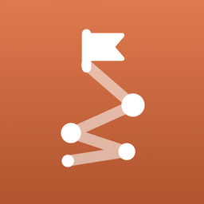
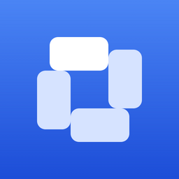
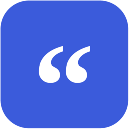
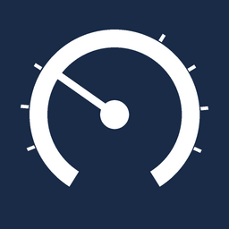
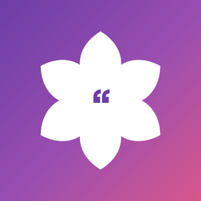
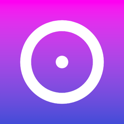
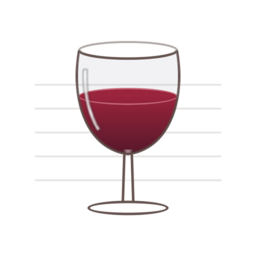

Lots of projects.
Constant switching.
Always climbing.
Switchback Labs is a one-person studio building practical apps for classrooms, studying and everyday life, on iPhone, Mac and the web.
Apps
-

Waymark Study
Web
Turn a PDF or a web page into flashcards, or bring a collection over from Anki, then study them on an FSRS spaced-repetition schedule.
-

ClassroomDesigner
Web
Seating charts and everyday classroom management: desk pods, keep-together and keep-apart rules, random groups, hall passes and dismissal.
-
High Low Buffalo
Web · iPhone
Share your High, your Low and your Buffalo (the unexpected part of your day) with the friends closest to you.
-

Cite It Right
Web · Safari extension
A free MLA 9, APA 7 and Chicago 18 citation generator for middle and high school students that explains each step.
-
JobTrack
Mac
A job-search pipeline tracker with statuses, follow-ups, documents and fit scoring, plus a helper that lets Claude read and update it.
-

FuelTrack
iPhone · Mac
Log fill-ups, scan receipts, and track fuel economy and spending for every car in your garage.
-
MarkdownDoctor
Mac
A Markdown editor with a live preview, maths and Mermaid diagrams, and PDF export that matches what you see. Works fully offline.
-
Bellwether
iPhone · Apple Watch
A silent tap on your wrist a few minutes before each class bell. No sound, just a haptic, with a complication counting down to the next one.
-

QuoteBloom
iPhone · Mac
Collect the words that move you, with shareable quote cards, a daily quote reminder and a home screen widget, synced privately through iCloud.
-

DateGlow
iPhone · Mac
Countdowns to the dates that matter, with recurring events, glowing gradients, widgets and iCloud sync.
-

CellarStories
iPhone · Mac · Web
A private wine journal, plus wine clubs for sharing tasting notes with the people who actually shared the bottle.
Why “Switchback”
A switchback is the zigzag a trail takes up a hill too steep to climb straight. Up close it looks like you keep turning back. From a distance, every turn has gained height.
That’s what building here looks like: eight to twelve projects going at once, switching between them, each one a little further along than last week. The logo is that trail. Each bright stop is a project.